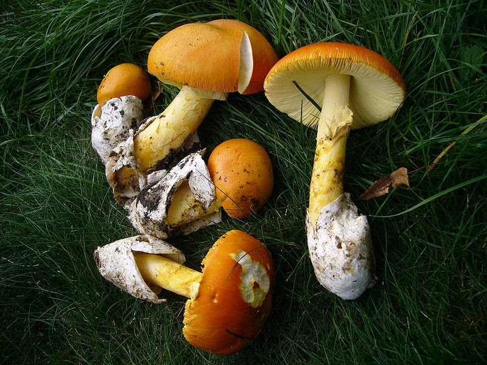

Craitele sunt ciuperci de padure comestibile si fac parte din flora spontana. Au un aspect elegant, corpolent si o culoare atragatoare. Sunt cunoscute si sub numele de Burete Domnesc, Roinita sau Ciuperca lui Cezar. Erau foarte apreciate de romani, iar in trecut era interzis ca oamenii de rand sa le consume.
Piciorul craitelor are forma cilindrica, usor umflata, lungimea de 8-12 cm, iar latimea poate varia intre 1.5-2.5 cm. Coloritul piciorului este galben sau galben-portocaliu. Pe partea superioara se gaseste un inel membranos, cu suprafata usor striata si de aceeasi culoare ca si piciorul. La maturitate, palaria craitelor are o culoare portocalie care atrage privirea de la distanta, iar dimensiunea acesteia variaza intre 6-18 cm. Are lame inalte, dese, de culoare galben-portocaliu si cu margini oarecum pufoase. Cuticula craitei are aspect neted, lucios, este usor lipicioasa in exterior si se desprinde de palarie destul de usor. In stadiu initial, craita este mult diferita fata de aspectul ei la maturitate. Are forma ovoida si culoarea alba, fiind inconjurata complet de un strat elastic si membranos. Se pot distinge piciorul si palaria care seamana cu un galbenus de ou. Forma palariei evolueaza de la forma cilindrica la forma convexa, pentru ca la maturitate sa devina plata sau usor concava. Craitele se disting prin faptul ca prefera temperaturile ridicate. Datorita acestui lucru, ciupercile pierd rapid apa din interior, ceea ce duce deseori la craparea radiala a palariei. Acest tip de ciuperci este foarte raspandit in zona mediteraneana, insa teritoriul in care cresc se extinde pana in Romania. Datorita incalzirii globale, pot fi gasite pe o suprafata din ce in ce mai larga. Craitele se dezvolta in locuri calde si destul de uscate, in paduri de foioase sau mixte sau in lungul drumurilor din regiunile cu clima blanda. Ca forma de relief, pot fi intalnite de la munte pana la campie. Prefera solurile nisipoase si cu pietris marunt. Acest tip de ciuperci poate fi cules intre lunile iunie si noiembrie.
Craita este una dintre cele mai apreciate ciuperci, fiind considerata ciuperca de calitate superioara. Este o delicatesa chiar si in stare cruda, putand fi utilizata in salate. Indiferent ca este consumata in forma proaspata sau uscata, nu isi pierde din proprietati. Este potrivita in tocanita, in omleta sau preparata la gratar. Craitele au gustul si mirosul slabe, nespecifice, insa foarte placute. Carnea lor este frageda. Aceste ciuperci contin vitamina D si alti nutrienti benefici pentru organism. Sunt indicate in tratarea migrenelor, in reglarea metabolismului si in intarirea sistemului imunitar. Prin deshidratare, craitele pot fi conservate timp indelungat, iar aroma lor devine mult mai intensa.